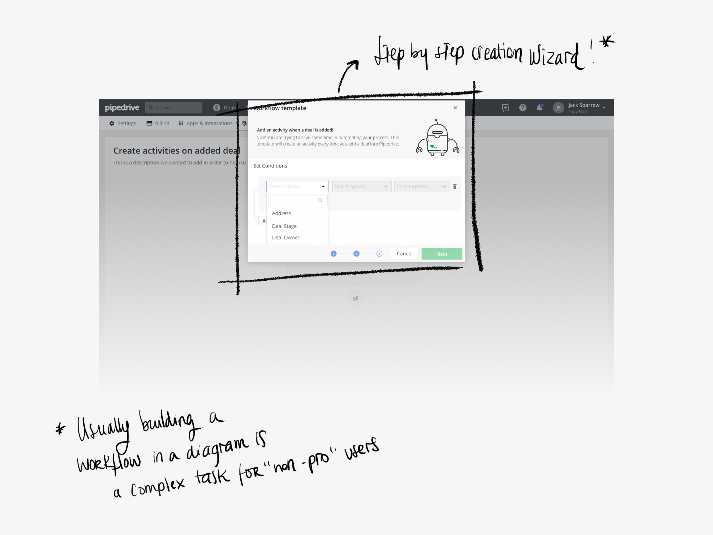
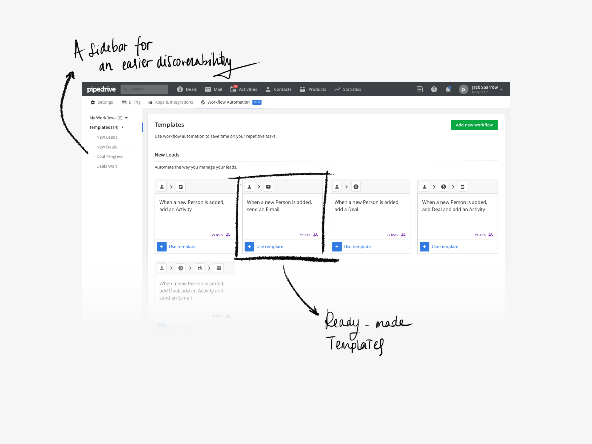
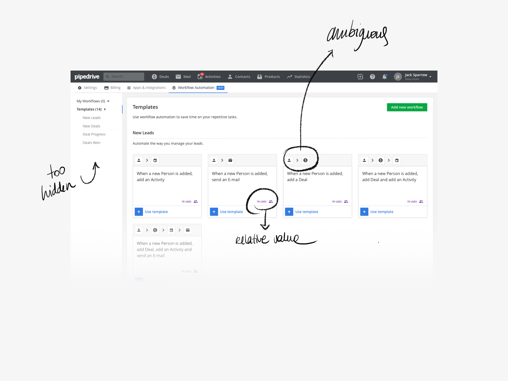
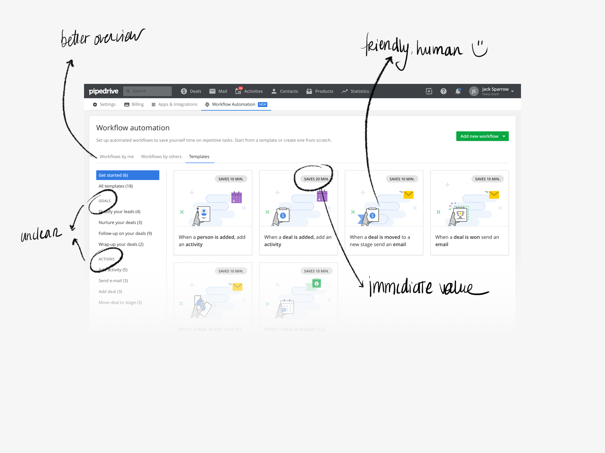
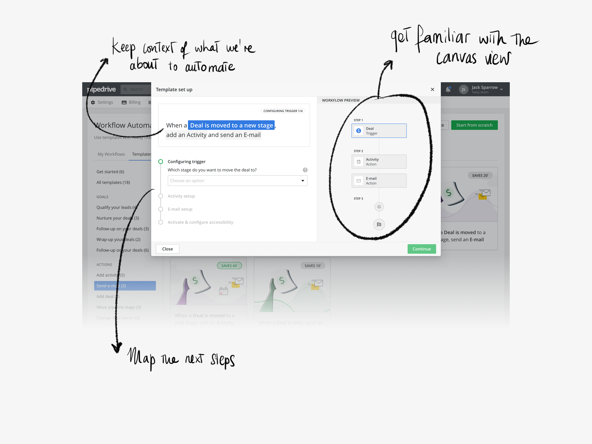
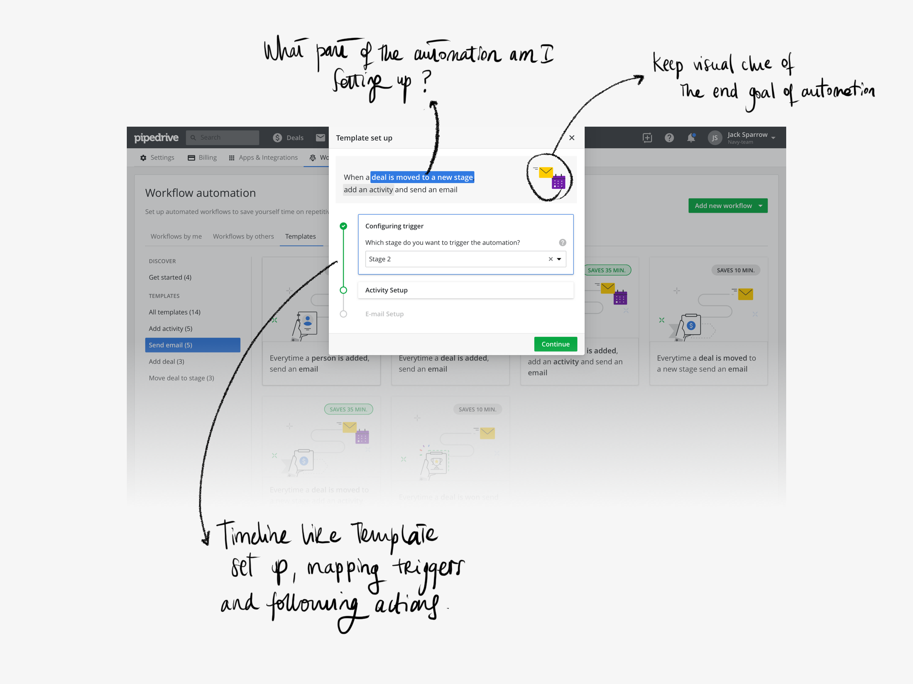
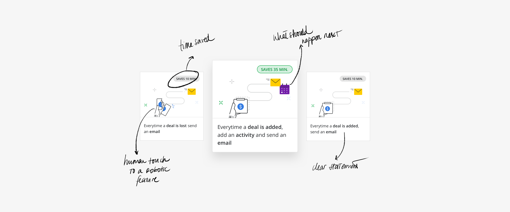

The design sprint
To address this issue we started by scheduling a 5-day design sprint based on Google Venture's book by Jake Knapp, entitled Sprint. We gathered a small group of 3 developers, 2 designers, 1 researcher and 1 product manager and occasionally invited sales representatives.
Day 1
We kicked the week off with an overview of what we want to achieve each day. It is crucial that we keep the plan by the end of each day, because our end-goal is to test a working prototype on Friday to collect feedback and start a mission as soon as possible. The plan is to write down our assumptions regarding Workflow Automation and define our long-term goal, after which we add our How Might We notes to the wall so we can actually define the end target we are going to focus on. Oh and at the same time a few interviews are being done by our amazing researcher, so we have our personas ready to help keep us on track.
Day 2
With an idea in mind of what we want to tackle, it is time to do some benchmarking and start thinking about possible solutions. Let's diverge! We sit, we grab interesting examples and we present them to each other. It is very cool to have developers involved in the whole process I might say!
Day 3
Have an idea? Let's put it down! Time to converge and show everyone what our thoughts are. We grabbed post-its and Sharpies and put our ideas in gallery view to later explain them to everyone and start the voting process on the ones we thought might be the most valuable. This is particularly useful to have uncommon thoughts see the light of day and influence the duller ones. Then the hard part begins, when we hit the board to try to make use of what our lovely minds came up with, trying to answer the problem we identified the day before, in the specific parts that were mapped as those that needed more attention.

Day 4
This is prototype day! After deciding on a flow we were all comfortable with and that respected our northern star goal, the day has finally come to put them into a hi-fi prototype (as much as possible). While designers were mainly busy with putting the prototype together, the rest was busy working on a script and preparing the usability testing for the next day.
We focused mainly on (1) providing pre-made templates for the most used automations within Pipedrive, which would consequently jumpstart the use of a hard to learn feature (based on the result of client surveys); (2) we focused also on building a workflow creation wizard, which purpose would be to guide the user along the way and allow for a reduced amount of customization as well as to make each step of the way as transparent as possible, to increase trust.
Here are the 2 main screens that reflect our learnings up until this point:


Day 5
It's Friyay! And we are ready to test the result of these 4 days of deep dive into workflow automation! The prototype will be useful to understand if we are on the right track and answer questions like: will our users value templates? or will template usage trigger the usage of automation as a feature?. So it's time to take notes, ask questions and analyse the results of our design sprint week. Are we ready to use what we have come up with as the basis of our next mission?
Ideated, prototyped and tested! Let's build it!
A usability journey
The basic and first prototype we came up with during the design sprint along with the results and findings we gathered from testing it on friday, will lead the way into the Mission ahead. Changes are incorporated and for the next 2 months the focus will be on building a consistent solution and have it tested internally and externally to make sure the changes made are what we are looking for.
Our initial prototype had some problems that we immediately identified during user testing, but it was useful to make sure we would definitely explore templates and the use of a creation wizard. On the down side? We had a lot to improve regarding onboarding and preparation to land in the unruly area of the canvas.
Templates should make users' life easier by allowing to pick a premade workflow, but on version 1 it wasn't completely clear what would trigger the actions and what they would actually be. Also, the idea of making it more transparent and user friendly wasn't quite coming along from there. Along the way we decided to illustrate what the templates would do, which proved much better in terms of both user understanding and engagement.




We focused mainly in providing working templates so users would be easily guided into the creation of a workflow, making it not only trustable, but also friendly. The illustration process was also key in providing a more humane touch to the whole automatic aura of the feature, at the same time that it stressed the time people would be saving by relying on automatic workflows.
